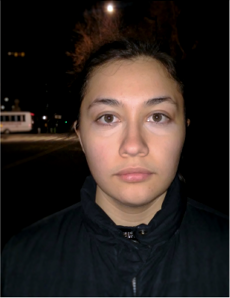

 Chantal is an artist currently living in New York, and studying animation at BMCC. She plans on transfering to a four year art school, where she will continue to study animation. Chantal's art is inspired by her childhood memories, and her dreams. Her hobbies and other interests include geocaching, baking, wildlife biology, and forestry. twitter, instagram